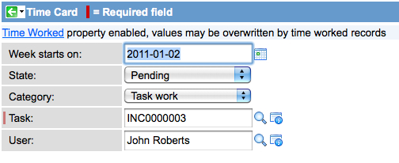
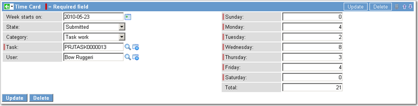

Time Cards
| |
Note: This article applies to Fuji. For more current information, see Time Cards at http://docs.servicenow.com
The ServiceNow Wiki is no longer being updated. Please refer to http://docs.servicenow.com for the latest product documentation. |
Contents
1 Overview
The time card management feature works with the Task table to record time worked on Projects, Incidents, Problems, and Change Requests. Task assignees can record time worked in the Time worked field on a task record or enter hours directly into their time card. Some tables support automatic time card creation based on start and end date fields.
Time cards also have an optional approval mechanism for project managers. Administrators and other roles that act as approvers can see all the time cards for the week. All users who are in a role that is responsible for working on tasks also can access their personal time cards. Time cards can have any of the following states.
- Pending
- Approved
- Submitted
- Rejected
| |
Note: The Time card management plugin is required to use time cards. Some of the procedures on this page require the project management feature, which activates time cards automatically. |
2 Recording Time Worked
Time accrued on a project or spent working on any record in the Task table is retrieved by the time card from the Time worked field. This field is present on Project Task records by default, but does not appear on the Incident, Problem, and Change forms and must be added by configuring the form. Time recorded in this field is used to populate an existing time card or to create a new time card if one does not already exist. This behavior is controlled by a time card property. The Time worked field has a counter that acts like a stopwatch for the duration of the time spent in the record. The counter can be stopped and started by a button in the field. By default, the Time worked counter is enabled and begins recording the elapsed time when the record is opened. Stop the counter with the red stop sign button and restart it with the green play button.
Time counter started:
{kind=link}
Time counter stopped:

If you are creating time cards from time worked entries, you can add the related list to display the time worked records on the time card form.
You will also notice an informational message on the time card to let you know that changes to time worked records will override values in the time card. This is displayed using a formatter, which can be added or removed by configuring the form.

{kind=link}
2.1 Project Management User Resources
When the project management feature is enabled, the total time from each time card is displayed in the User Resource record for that Project Management task. To view a resource record, navigate to either of the following locations:
- Project > Views > Resources by Project:
{kind=link}
- Project > Views > Project by Resources:
{kind=link}
2.2 Creating a Time Card
Time cards can be created automatically or manually:
- Automatic: Configure time cards to be created when a user updates a task record. This behavior is controlled by a time card property that is set to false by default. See the table of properties in this page for details. In Incident, Problem, and Change records, the Time worked field must be added to the form.
- Manual: Create a new time card for each task and enter the times manually.
| |
Note: Time cards cannot be created automatically when you use the mobile interface. Use the desktop interface if you want to use the automatic time card feature. |
Users with the timecard_admin role can create a time card manually:
- Navigate to Time Cards > All and click New.
- The Week starts on, State, and Category fields are completed automatically. The category defaults to Task work, but can be any of the following:
- Task work
- Admin
- Meeting
- KTLO (maintenance of existing system)
- Out of office
- Training
- Select a Task from the pop-up list.
- This can be anything from the Task table.
- Select your name from the list in the User field.
- Click Submit.
- After the time card is created, the hours for that task can be incremented automatically from the Time worked field in the task record. This is controlled by a time card property, which is set to true by default. See the table of properties in this page for details. If automatic updates are not configured, the time card must be updated manually by the user or an administrator.
- 
{kind=link}
2.3 Managing Time Cards
The My Time Cards > Current module presents a page showing all of your time cards for the current week. There is also a control to Generate Task Cards. This button will search for all planned tasks that are scheduled for the current time card period, if you don't already have a time card for the task.
3 Properties
Users with the timecard_admin role can set time card properties by navigating to Time Cards > Administration > Properties.
| Name | Description | Default |
| com.snc.time_card.autocreate | Auto-create a user's time card when they update a task | No |
| com.snc.time_card.time_worked | Auto-fill a user's time card with time from their 'Time worked' entries | No |
| com.snc.time_card.update.effort | Update the task's 'Actual effort' based on the hours entered in the time card | No |
| com.snc.time_card.update.resource | Update the project/user's resource allocation record based on the hours entered in the time card | No |
| com.snc.time_card.start_day | What day should time cards start on, default is Sunday. Changing this value may create duplicate time cards for the week of the change, since time card queries are based on this value. | Sunday |
4 Managing Costs
When the cost management feature is enabled, time cards can be used to manage the cost of labor in the Financial Management application.
When a time card is marked Approved, the user's rate (listed in the Labor Rate Card) is used to generate a one-time Expense Line for the time worked. If no Labor Rate Cards apply to the user, the property com.snc.time_card.default_rate defines a default rate.
5 Roles
The timecard_admin role enables users to approve, modify, and delete the time cards of other users.
6 Activating Time Card Management
Administrators can activate the Time card management plugin.
| Click the plus to expand instructions for activating a plugin. |
|---|
|
If you have the admin role, use the following steps to activate the plugin.
|